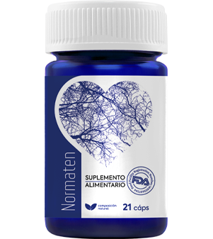

Los científicos han llegado a la conclusión de que el kiwi es el alimento más peligroso para la hipertensión. El 43% de los chilenos con hipertensión muere de un infarto provocado por kiwi
Durante muchos años, la presión arterial alta (hipertensión) se consideraba un problema de las personas mayores. Pero cada vez más, la enfermedad cardiovascular se diagnostica en niños y adolescentes. Las causas de la hipertensión no son fáciles de determinar. En un estudio de la Facultad de Medicina de Harvard se ha añadido una larga lista de posibles factores. Según los científicos estadounidenses, el riesgo de hipertensión arterial puede desarrollarse como consecuencia del consumo regular de kiwi.
Para un estudio publicado en la revista científica BMJ, un equipo de científicos dirigido por Lea Borgi analizó los datos de 187.000 hombres y mujeres durante 20 años. Esto incluía información sobre la ingesta de alimentos, que fue obtenida a través de cuestionarios, así como evaluaciones médicas de la presión arterial.
Después de tener en cuenta todos los factores de riesgo, los sujetos que comían kiwis varias veces a la semana eran significativamente más propensos a tener la presión arterial alta que las personas que solo comían kiwis una vez al mes. No importaba si el kiwi se consumía como producto único o en forma de zumo.
Como dicen los propios autores del estudio, los resultados les sorprendieron. Los científicos sugieren que el kiwi tiene un alto índice glucémico, lo que hace que el nivel de azúcar en la sangre aumente bruscamente después de su consumo. Por lo tanto, se aconseja a las personas que sufren de presión arterial alta que reduzcan el consumo de kiwi.
Rodrigo Águila Garay, especialista en cardiología, profesor y jefe de Departamento de Enfermedades Miocárdicas e Insuficiencia Cardíaca, comenta el problema
- De hecho, científicos estadounidenses evaluaron los hábitos alimenticios de 187.000 personas y descubrieron que las personas que comían kiwi al menos cuatro veces a la semana tenían más probabilidades de sufrir hipertensión arterial que las que lo comían una vez a la semana.
El contenido nutricional y energético de los alimentos que una persona consume a diario desempeña un papel importante en la prevención del desarrollo y la progresión de la hipertensión.
En primer lugar, los pacientes con hipertensión deben seguir las recomendaciones sobre el valor calórico de la dieta, ya que el peso extra para una persona con hipertensión es una carga adicional para el corazón.
Las frutas de kiwi contienen muchas sustancias importantes para la actividad del organismo: calcio, potasio, zinc, magnesio, azufre, cloro, manganeso, flúor, fósforo, sodio, así como vitaminas del grupo B (B1, B2, B6, B9), A y PP. Son ricas en vitamina C, que refuerza el sistema inmunitario y ayuda al organismo a combatir las infecciones víricas. Debido a su alto contenido en fibra, la baya mejora la digestión y elimina la sensación de pesadez en el estómago, mientras que los ácidos orgánicos eliminan el exceso de líquido del cuerpo. Esto contribuye a la pérdida de peso natural, y el valor calórico de un kiwi es de solo 48 kcal por cada 100 gramos.
Además del contenido calórico, el exceso de sal en la dieta también tiene un impacto negativo en el sistema cardiovascular: retiene líquido en el cuerpo, lo que supone una carga adicional para el corazón. La sal es una sustancia muy peligrosa para el hipertenso, por lo que su contenido debe reducirse de los 5 g/día recomendados para las personas sanas a 3,8 g/día.
Ahora existen remedios que reducen la presión arterial de forma "suave" y eficaz. Se trata de remedios de primeros auxilios para la mayoría de los hipertensos, que es aconsejable tener a mano en el botiquín de casa.
Para restablecer la función del sistema cardiovascular y reducir la presión arterial a un nivel adecuado para la edad, sin forzar la dilatación de los vasos, recomiendo el producto de nueva generación Normaten. Es completamente seguro, no tiene efectos secundarios y puede tomarse sin supervisión médica.
Normaten funciona en tres etapas:
- 1. Elimina la ansiedad, la inquietud, el miedo, la tensión emocional interna, la sudoración, las palpitaciones y la falta de aliento
- 2. Hace desaparecer o alivia significativamente enfermedades como la hipertensión, los dolores de cabeza, las varices, la trombosis. Desaparecen los acúfenos, los mareos y la hinchazón. La agudeza visual y la claridad mental mejoran. Se normaliza el peso y el metabolismo de las grasas.
- 3. Aumenta la resistencia y la elasticidad de las paredes de los vasos sanguíneos. Previene la formación de nuevas placas y reduce el riesgo de ictus en 11 veces.
El efecto de Normaten NO va acompañado de miorrelajación, somnolencia y alteración de la coordinación, no reduce la actividad mental ni motora, por lo que puede utilizarse durante la jornada laboral o de estudio.
Las cápsulas Normaten son compatibles con cualquier remedio. No hay adicción, dependencia o síndrome de abstinencia. Normaten es de acción rápida: la concentración máxima en sangre se alcanza al cabo de 20 minutos. El producto no es tóxico y puede combinarse con otros remedios.
Para la distribución de Normaten, hemos creado un departamento especial que se ocupa de la tramitación de las solicitudes. Todos los que quieran recibir Normaten con entrega deben indicar su nombre y datos de contacto. Un consultor se pondrá en contacto con usted para acordar un plazo de entrega adecuado. Hemos hecho todo lo más sencillo posible para que todo el mundo pueda acceder al producto, incluso si no ha pedido nada en línea antes.
Llevamos dos meses distribuyendo Normaten. Durante este tiempo hemos recibido muchas cartas de agradecimiento de personas que sufren hipertensión. ¡Esto demuestra que EL PRODUCTO AYUDA A LOS HIPERTÓNICOS A VIVIR CON COMODIDAD SIN RIESGO DE INFARTOS E INSULTOS!
Especialmente para nuestros lectores, hemos añadido el formulario de pedido de Normaten
PARA PEDIR NORMATEN, INDIQUE SUS DATOS A CONTINUACIÓN:
La oferta especial es válida hasta el final del día 09.11.2021
COMENTARIOS:
Rodrigo Flores Toro
No tenía ni idea de que el kiwi pudiera afectar a mi presión arterial. Lo como mucho, ahora tengo que limitarme para no arruinar mi salud
Rocio Navarro Tapia
La hipertensión no es una enfermedad agradable. Tomo constantemente varios remedios hipotensores y desde hace poco me he pasado a Normaten, una vez que me decidí a comprarlo y me gustó inmediatamente. Tiene efecto y mi presión arterial es muy buena, tomo una cápsula por la mañana y durante el día. Mientras yo no haga un esfuerzo excesivo, la presión arterial se mantiene dentro de la norma.
Jazmin Villalba Castro
Sinceramente, ¡es un gran producto! Lo pedí en cuanto leí este artículo. Cuando recibí Normaten, empecé a tomarlo enseguida. Esa misma tarde noté una mejora en mi salud. Mi presión arterial volvió a ser normal. Era normal no como para persona hipertensa, sino como para una persona sana normal. Mi estado después de tomarlo es estupendo. Me sentía más fuerte y dormía mejor.
Rodrigo Perez Coto
Nunca había oído hablar de este remedio pero quiero probarlo y pedirlo.
Ignacio Negrete Bahamondes
Desde hace seis meses vivo estresado: a mi mujer le sube la presión arterial por la noche. Cada vez que llamamos a una ambulancia y rezamos para que llegue a tiempo... Hace una semana pedimos Normaten y ocurrió un milagro. El primer día, la presión arterial de mi mujer no subió. Por fin puedo ver una sonrisa en su cara. ¡Gracias por este producto!
Maritza Briones Parra
A mi madre se la llevaron en una ambulancia en estado de preinfarto el mes pasado. Los médicos dijeron que era por las subidas de tensión. Desde entonces toma pastillas todo el tiempo, y todo el tiempo está nerviosa y se toma la presión arterial 30 veces al día ... ¡No tiene tiempo para una vida normal! ¡¡¡Dispuesto a comprarlo por cualquier cantidad de dinero mientras funcione y ayude a mi madre!!!
Lilian Farias Fuentes
¡Confirmo cada palabra, Normaten es excelente, uno de los remedios más económicos y efectivos!
Erick Gaete Perez
Tengo hipertensión arterial y también insuficiencia cardíaca, y tengo que tomar remedios constantemente. Normaten es mi salvavidas, lo llevo conmigo todo el tiempo, me ayuda a reducir rápidamente mi presión arterial alta y alivia el esfuerzo de mi corazón. Es barato y ayuda rápidamente, en unos 5 minutos el dolor de cabeza desaparece.
Francisco Maripillan Torres
Normaten es uno de mis favoritos en este momento. He experimentado y probado muchos remedios diferentes para la presión arterial alta. Algunos de ellos no ayudaron en absoluto y otros me bajaron tanto la tensión arterial que no tenía ninguna fuerza. Pero con este producto, todo es genial. Es rápido y estoy contento con los resultados.
Catalina Sanhueza Fernández
¡Gracias por la gran noticia! Todos los hipertensos pueden leer y aprender algo nuevo sobre la terapia.